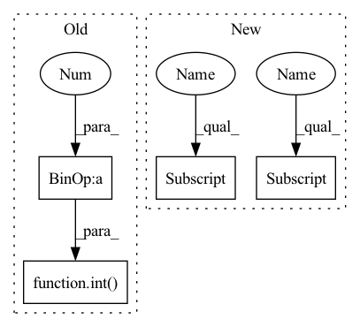

Pattern ID :1197

Before Change
super().__init__()
// parameters of the network
base_channels = int(wid_mul * 64) // 64
base_depth = max(round(dep_mul * 3), 1) // 3
assert out_features, "please provide output features of Darknet!"
self.out_features = out_features
After Change
// dark4
self.dark4 = nn.Sequential(
BaseConv(channels[2], channels[3], 3, 2, norm=norm, act=act),
CSPLayer(
channels[3],
channels[3],
num_bottle=base_depth * 3,
norm=norm,
act=act,
),
)
// dark5
self.dark5 = nn.Sequential(
BaseConv(channels[3], channels[4], 3, 2, norm=norm, act=act),
SPPBottleneck(channels[4], channels[4], norm=norm, act=act),
CSPLayer(
channels[4],
In pattern: SUPERPATTERN
Frequency: 3
Non-data size: 4
Instances
Fragment ID: 3469876
Project Name: iywie/pl_yolo
Commit Name: a3c6bbe72d4f783d07b149010897c34fd45454ed
Time: 2022-01-21
Author: zhouyw96@outlook.com
File Name: models/backbones/darknet_csp.py
M Class Name: CSPDarkNet
N Class Name: CSPDarkNet
M Method Name: __init__(6)
N Method Name: __init__(6)
M Parent Class: nn.Module
N Parent Class: nn.Module
M File Name: models/backbones/darknet_csp.py
N File Name: models/backbones/darknet_csp.py
M Start Line: 20
M End Line: 70
N Start Line: 25
N End Line: 69
'>
Before Change
super().__init__()
// parameters of the network
base_channels = int(wid_mul * 64) // 64
base_depth = max(round(dep_mul * 3), 1) // 3
assert out_features, "please provide output features of Darknet!"
self.out_features = out_features
After Change
// dark4
self.dark4 = nn.Sequential(
BaseConv(channels[2], channels[3], 3, 2, norm=norm, act=act),
CSPLayer(
channels[3],
channels[3],
num_bottle=base_depth * 3,
norm=norm,
act=act,
),
)
// dark5
self.dark5 = nn.Sequential(
BaseConv(channels[3], channels[4], 3, 2, norm=norm, act=act),
SPPBottleneck(channels[4], channels[4], norm=norm, act=act),
CSPLayer(
channels[4],
channels[4],
num_bottle=base_depth,
shortcut=False,
'>
Fragment ID: 3469877
Project Name: iywie/pl_yolo
Commit Name: a3c6bbe72d4f783d07b149010897c34fd45454ed
Time: 2022-01-21
Author: zhouyw96@outlook.com
File Name: models/backbones/darknet_csp.py
M Class Name: CSPDarkNet
N Class Name: CSPDarkNet
M Method Name: __init__(6)
N Method Name: __init__(6)
M Parent Class: nn.Module
N Parent Class: nn.Module
M File Name: models/backbones/darknet_csp.py
N File Name: models/backbones/darknet_csp.py
M Start Line: 20
M End Line: 70
N Start Line: 25
N End Line: 69
'>
Before Change
self.tokenizer = hyper_parameters["tokenizer"]
self.__cnn__ = cnn.features
self.__img2embed_conv__ = nn.Conv2d(self.features_dim, int(self.embed_dim * 0.5), kernel_size = 1, stride = 1)
self.__content_embed__ = gpt2_model.wte
self.__position_embed__ = gpt2_model.wpe
self.__hidden_layers__ = gpt2_model.h
After Change
self.vocab_dim = hyper_parameters["vocab_dim"]
self.layer_num = hyper_parameters["layer_num"]
self.block_num = hyper_parameters["block_num"]
self.clip_dim = hyper_parameters["clip_dim"]
self.tags_num = 0//hyper_parameters["tags_num"]
self.tokenizer = hyper_parameters["tokenizer"]
self.start_token = hyper_parameters["start_token"]
self.end_token = hyper_parameters["end_token"]
self.__clip__ = clip_model
self.__cnn__ = cnn.features
'>
Fragment ID: 3469886
Project Name: siwooyong/codalab-microsoft-coco-image-captioning-challenge
Commit Name: d24b22ec9f0be1acd2f307be20ec85f84f8d8795
Time: 2021-07-08
Author: 68500343+yongsiwoo@users.noreply.github.com
File Name: models/base_model.py
M Class Name: decoder
N Class Name: decoder
M Method Name: __init__(5)
N Method Name: __init__(5)
M Parent Class: nn.Module
N Parent Class: nn.Module
M File Name: models/base_model.py
N File Name: models/base_model.py
M Start Line: 20
M End Line: 30
N Start Line: 22
N End Line: 45
'>
Before Change
self.embed_dim = embed_dim
self.ape = ape
self.patch_norm = patch_norm
self.num_features = int(embed_dim * 2 ** (self.num_layers - 1))
self.mlp_ratio = mlp_ratio
// split image into non-overlapping patches
self.patch_embed = PatchEmbed(
After Change
// absolute position embedding
if self.ape:
pretrain_img_size = to_2tuple(pretrain_img_size)
patch_size = to_2tuple(patch_size)
patches_resolution = [pretrain_img_size[0] // patch_size[0], pretrain_img_size[1] // patch_size[1]]
self.absolute_pos_embed = nn.Parameter(torch.zeros(1, embed_dim, patches_resolution[0], patches_resolution[1]))
trunc_normal_(self.absolute_pos_embed, std=.02)
'>
Fragment ID: 3469867
Project Name: plemeri/inspyrenet
Commit Name: 12b05eaf235665fc6d1f89a9055b84d7cdfec923
Time: 2021-10-14
Author: taehoon1018@postech.ac.kr
File Name: lib/backbones/SwinTransformer.py
M Class Name: SwinTransformer
N Class Name: SwinTransformer
M Method Name: __init__(20)
N Method Name: __init__(19)
M Parent Class: nn.Module
N Parent Class: nn.Module
M File Name: lib/backbones/SwinTransformer.py
N File Name: lib/backbones/SwinTransformer.py
M Start Line: 483
M End Line: 539
N Start Line: 489
N End Line: 549